ปริซึมและพีระมิด
ทรงสามมิติ (Solid) ในที่นี้มีความหมายอย่างเดียวกับรูปทรงที่มีความกว้าง ความยาว และความสูง ทรงสามมิติที่กล่าวถึง ได้แก่ ทรงสี่เหลี่ยมมุมฉาก ปริซึม ทรงกระบอก กรวย ทรงกลม เป็นต้น
พื้นที่ผิว คือ ผลรวมของพื้นที่ผิวข้างทุกด้านของรูปทรง เช่น
พื้นที่ผิวของรูปทรงสี่เหลี่ยมมุมฉากจะมีพื้นที่ผิวข้าง 6 ด้านรวมกัน
ปริมาตร คือ ปริมาณที่วัดเพื่อแสดงบริเวณที่ว่าง (ความจุ) ภายในรูปทรงสามมิติ
การวัดปริมาตรของรูปทรงสามมิติใช้หน่วยวัดเป็น
ลูกบาศก์หน่วย
ปริมาตร 1 ลูกบาศก์หน่วย คือ รูปทรงสี่เหลี่ยมมุมฉากที่มีความกว้าง 1 หน่วย ความยาว 1 หน่วย และความสูง 1 หน่วย
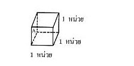ลูกบาศก์ A มีปริมาตร 1 ลูกบาศก์หน่วย
ลูกบาศก์ B มีปริมาตร 1 ลูกบาศก์หน่วย
พื้นที่ผิวและปริมาตรรูปทรงสี่เหลี่ยมมุมฉาก
ทรงสี่เหลี่ยมมุมฉาก คือ รูปทรงสามมิติที่ทุกด้านเป็นรูปเหลี่ยมมุมฉาก และด้านตรงข้ามเท่ากันทุกประการและขนานกัน
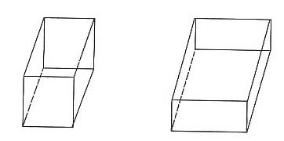 สูตร พื้นที่ผิวของทรงสี่เหลี่ยมมุมฉาก = ผลรวมของด้านทั้ง 6 ด้าน
ปริมาตรของทรงสี่เหลี่ยมมุมฉาก = ความกว้าง x ความยาว x ความสูง
หรือ ปริมาตรของทรงสี่เหลี่ยมมุมฉาก = พื้นที่ฐาน x สูง
พื้นที่รูปสามเหลี่ยม เมื่อกำหนดด้านให้ 3 ด้าน
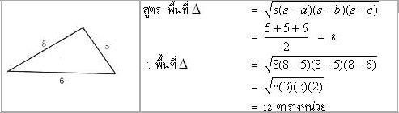พื้นที่รูปสามเหลี่ยมด้านเท่า
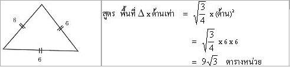1. ปริซึม
ปริซึม คือ ทรงสามมิติที่มีฐานทั้งสองเป็นรูปสี่เหลี่ยมที่เท่ากันทุกประการ ฐานทั้งคู่อยู่ในระนาบที่ขนานกัน
และด้านข้างแต่ละด้านเป็น
รูปสี่เหลี่ยมด้านขนาน
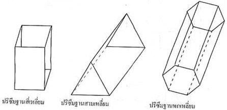สูตร พื้นที่ผิวของปริซึม = พื้นที่ผิวข้าง + พื้นที่ผิวหน้าตัด
ปริมาตรปริซึม = พื้นที่ฐาน x สูง
พื้นที่ผิวของปริซึม เมื่อคลี่ผิวข้างของปริซึมใด ๆ พบว่า จะเกิดเป็นรูปสี่เหลี่ยมผืนผ้าที่มีความยาวเท่ากับเส้นรอบฐานและส่วน
กว้างเท่ากับความสูง ดังรูป
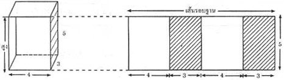สูตร พื้นที่ผิวข้าง = เส้นรอบฐาน x สูง
ตัวอย่าง
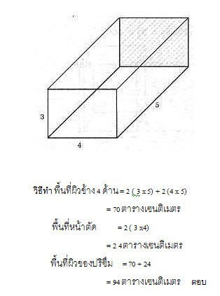ตัวอย่าง 2
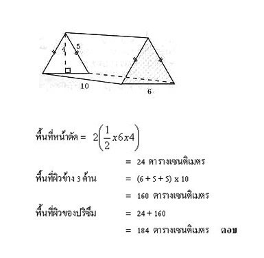2.พีระมิด
พีระมิด คือ ทรงสามมิติที่มีฐานเป็นรูปเหลี่ยมใด ๆ มียอดแหลม
ซึ่งไม่อยู่ในระนาบเดียวกับฐานและหน้าทุกหน้าเป็นรูปสามเหลี่ยม
ที่มีจุดยอดร่วมกันที่ยอดแหลม
ลักษณะของพีระมิดตรง
1. หน้าของพีระมิดตรงเป็นรูปสามเหลี่ยมหน้าจั่ว และเท่ากันทุกรูป
2. สันของพีระมิดตรงจะยาวเท่ากันทุกเส้น
3. ความสูงเอียงของพีระมิดตรงด้านเท่า มุมเท่า จะยาวเท่ากันทุกเส้น
4. ปริมาตรของพีระมิด เป็นหนึ่งในสามของปริมาตร ปริซึมที่มีฐานเท่ากันกับพีระมิดและมีส่วนสูงเท่ากับพีระมิด
การหาส่วนต่าง ๆ ของพีระมิด
1. โจทย์ พีระมิดฐานสี่เหลี่ยมผืนผ้า กว้าง 10 เซนติเมตร ยาว 18 เซนติเมตร และความสูงของพีระมิดเป็น 12 เซนติเมตร จงหาความสูงเอียงทั้ง 2 ด้าน พีระมิดเป็น 12 เซนติเมตร จงหาความสูงเอียงทั้ง 2 ด้าน
(1) ความสูงเอียงด้านกว้าง
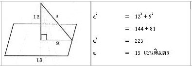(2) ความสูงเอียงขนานด้านยาว
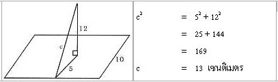2. โจทย์ พีระมิดสี่เหลี่ยมผืนผ้า
กว้าง 6 เซนติเมตร ยาว 8 เซนติเมตร มีสันยาว 13 เซนติเมตร จงหาส่วนสูง
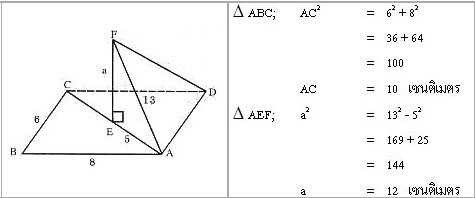ตัวอย่าง พีระมิดแห่งหนึ่งมีฐานเป็นรูปสี่เหลี่ยมจัตุรัส ยาวด้านละ 6 เมตร สูงเอียง 5 เมตร และสูงตรง 4 เมตร จงหาพื้นที่ผิวและปริมาตรของพีระมิด
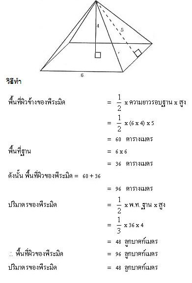3. กรวย
ในทางคณิตศาสตร์ให้ความหมายคำว่า กรวย ดังนี้
รูปเรขาคณิตสามมิติที่มีฐานเป็นรูปวงกลม มียอดแหลมที่ไม่อยู่ในระนาบเดียวกันกับฐาน
และเส้นที่ต่อระหว่างจุดยอดกับจุดใดๆ บนขอบของฐานเป็นส่วนของเส้นตรง เรียกรูปเรขาคณิตสามมิตนั้นว่า กรวย
สูตรคำนวณต่างๆที่เกี่ยวข้องกับกรวย
ปริมาตรของกรวย = 1/3 X (22/7 หรือ 3.14) X รัศมียกกำลังสอง X สูงตรง
พื้นที่ผิวของกรวย = (22/7 หรือ 3.14) X รัศมี X สูงเอียง + (22/7 หรือ 3.14) X
รัศมียกกำลังสอง
กรวย (cone) คือ ทรงสามมิติใด ๆ ที่มีฐานเป็นวงกลม มียอดแหลมที่ไม่อยู่บนระแนบเดียวกันกับฐาน และเส้นที่ต่อระหว่างจุดยอดและจุดใด ๆ บนขอบของฐานเป็นส่วนของเส้นตรง
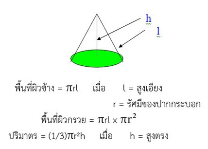4.ทรงกระบอก
ทรงกระบอก (Cylinder) คือ ทรงสามมิติใด ๆ ที่มีฐานเป็นรูปวงกลมที่เท่ากันทุกประการกับหน้าตัด และอยู่ในระนาบที่ขนานกัน เมื่อตัดทรงสามมิตินี้ด้วยระนาบที่ขนานกับฐานแล้ว จะได้รอยตัดเป็นวงกลมที่เท่ากันทุกประการกับฐานเสมอ
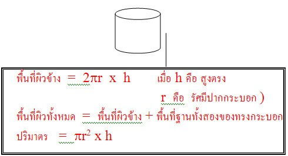5.ทรงกลม
ทรงกลม คือ รูปเรขาคณิตสามมิติหรือทรงสามมิติที่มีผิวโคงเรียบ และจุดทุกจุดบนผิวโคงอยู่ห่างจากจุดคงที่จุดหนึ่งเป็นระยะทางเท่ากัน จุดคงที่นั้นเรียกว่า เส้นผ่านศูนย์กลางของทรงกลม และระยะทางที่เท่ากันนั้นเรียกว่า รัศมีของทรงกลม
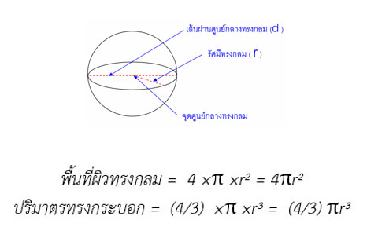